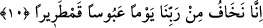

Amr’dan boşuna ücret bekleme.
10. «Biz, çetin ve belâlı bir günde Rabbimizden (O’nun azâbına uğramaktan)
korkarız» (derler).
“Şüphesiz Biz” yüzlerin ekşidiği “çok sert bir günden” o günün azâbından dolayı
“Rabbimizden korkarız (derler.)”
Meâlde, âyetteki “yevmen ‘abûsen” deyimi “çok çetin, sert bir gün” şeklinde ifâde
edildi. Aslında sözlük anlamı dikkate alınırsa buna “asık suratlı gün” demek gerekir.
Şunu belirteli ki âyetteki bu isnâd, “fiilin zamanına isnâdı” kabilindendir ki mânâ;
“içinde yüzlerin ekşidiği gün” şeklinde olur. Yâni o öyle bir gün ki hâllerin
kötülüğünden dolayı yüzler ekşir. Rivâyete göre kâfirlerin yüzleri o gün gerçekten öyle
asılacak, öyle buruşacaktır ki gözlerinden akacak yaş katran gibi simsiyah olacaktır.
“Abûs”, insanın göğsünün daralmasından dolayı yüzünün ekşimesi demektir. “Abûs”
kelimesine bir başka anlam daha verilmiştir ki buna göre “yevmen ‘abûsen” ifâdesi,
“abûs arslana benzeyen gün” demek olur. Bu da o günün, gördüğü her şeye hiddetle ve
şiddetle zarar vermek üzere saldıran, hücum eden çok şiddetli bir arslana benzediğini
haber verir.
“Kamtarîr” kelimesi ile kasdedilen mânâ ise “çok sert, suratı asık ve şiddetli gün”
demektir. Bu nedenle yoksullara, yetimlere ve esirlere yardım edip onları doyuranlar;
“Biz size yaptıklarımızı ancak ve ancak Rabbimizin bizi bu vesileyle o günün şerrinden
korumasını umduğumuzdan dolayı yapıyoruz; yoksa sizden bir mükâfât beklentisi içinde
olduğumuzdan filan değil” demiş oluyorlar. Arapçada “vechun kamtarîrun” ifâdesi
şiddetli asıklıktan dolayı kasılan yüz anlamınadır. Keşşaf ’ta ise “el-Kamtarîr” iki gözü
arası bir araya kasılmış, yüzü asık ve ekşi kimse demektir.
Hasan Basrî (rh.)’dan “kamtarîr” kelimesinin anlamının ne olduğu soruldu. Buyurdu
ki; “o, ismi kendinden, kendisi de isminden çetin ve zor olan kıyâmet gününün ismidir.”
[210]. Bk. Münâvi, II, 482.
[211]. Deylemi, hadis no: 1151.
[212]. Buhari, Eyman 28, 31; Ebû Davud, Eyman 19; Tirmizi, Nüzur 2; Nesai, Eyman
27, 28; İbn Mace, Keffarat 16; Muvatta, Nüzur 8; Ahmed b. Hanbel, el-Müsned, VI, 36,
41, 224.
[213]. Buhari, Edeb 80; Ahkâm 22; Meğazi 60; Müslim, Eşribe 73-75.
[214]. Müslim, Zühd 74; Tirmizi, Bûyu 65; İbn Mace, Sadakat 14; Ahmed b. Hanbel,